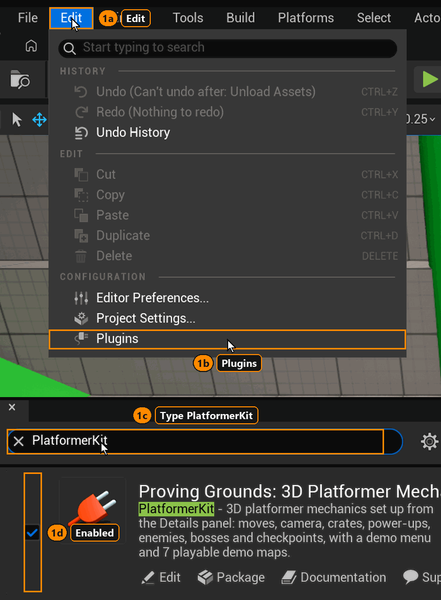
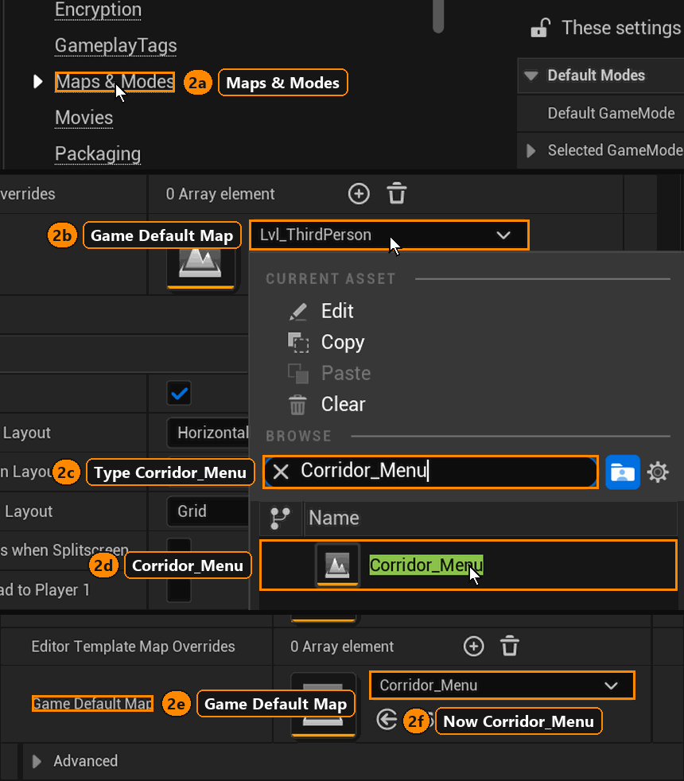
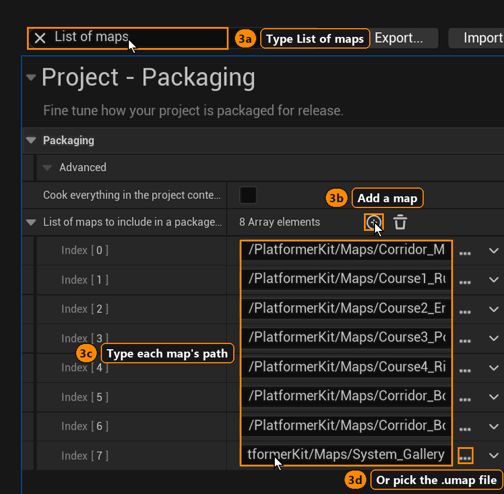
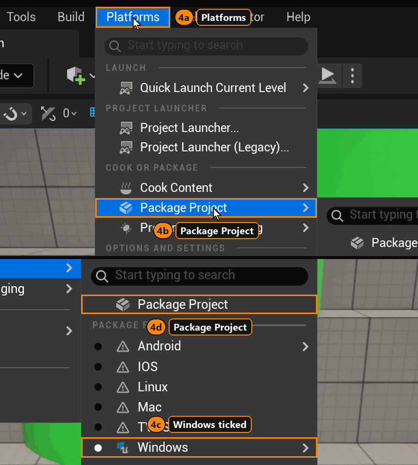
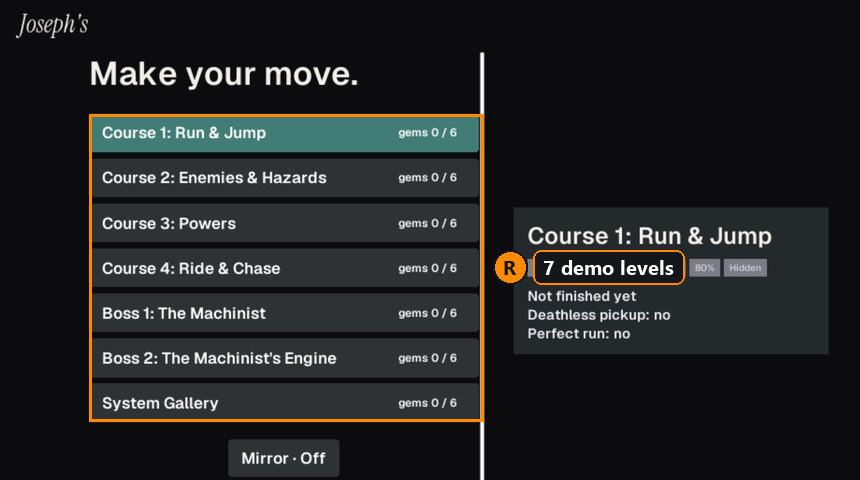

16. Package and ship your game
Goal: turn your project into a Windows game that starts at the kit's menu and runs every demo level, with nothing but the Unreal Editor's own menus.
You need: Unreal Engine 5.3–5.8 with the plugin enabled (pictures: 5.7). A Blueprint-only project also needs Visual Studio 2022 with the Game development with C++ workload: Unreal builds a temporary code target for the plugin during the first package. Here the project is a fresh Third Person template with the kit added.
Part 1: check the plugin
- Click Edit > Plugins and type PlatformerKit in the search box. One card stays: Proving Grounds: 3D Platformer Mechanics with its box ticked. If the box is empty, tick it and restart the editor.

Part 2: what goes into the package
- Click Edit > Project Settings... and open Maps & Modes. Open the Game Default Map list, type Corridor_Menu in its search box and click Corridor_Menu, so the packaged game starts at the kit's menu. Skip this if your game starts at your own map.

- Type List of maps in the Project Settings search box. Next to List of maps to include in a packaged build click + once per map you ship and type the map's path in the new box, for example /PlatformerKit/Maps/Corridor_Menu (or click ... and pick the map's .umap file). The menu opens its levels by name, so with the kit's menu add all eight: Corridor_Menu, Course1_RunAndJump, Course2_EnemiesHazards, Course3_Powers, Course4_RideChase, Corridor_Boss1, Corridor_Boss2 and System_Gallery, each under /PlatformerKit/Maps/. The kit's sounds, crates, level table and themes are cooked already.

Both settings are saved at once, in your project's Config/DefaultEngine.ini and Config/DefaultGame.ini.
Part 3: package
- Click Platforms > Package Project. Under Package For check that Windows is ticked (click it if not), then click Package Project at the top of the list and choose an empty folder. The Output Log shows the build, the cook and the copy; the first package of a Blueprint-only project takes a few minutes longer. In 5.3 the same command is in the toolbar: Platforms > Windows > Package Project.

Result
In the folder you chose, open Windows and start

If it doesn't work - "Plugin 'PlatformerKit' failed to load because module 'PlatformerKit' could not be found" in the packaged game: the plugin was copied by hand into your project's Plugins folder and its .uplugin lacks "EnabledByDefault": false. Add that line, or install through Fab (the launcher puts the plugin in the engine), and package again. - A level from the menu does not open, or the game opens your template map: a map is missing from List of maps to include in a packaged build, or Game Default Map is not Corridor_Menu. - The build stops before cooking with a compiler message: install Visual Studio 2022 with Game development with C++, then package again. After packaging, play the menu, one course, one boss start, a death and the level end screen.
See also: Quickstart, Packaging · topic 12, Themes (cook your own theme)